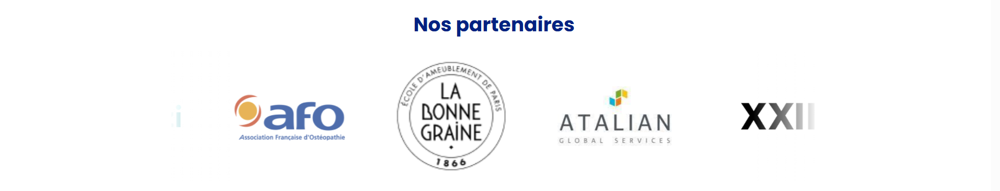

Mon second stage s’est déroulé au sein de l’entreprise Predict Analyse, spécialisée dans le bien-être
physique et psychologique au travail. Intégré à une équipe dynamique et tournée vers l’innovation, j’ai eu l’opportunité
de travailler sur des projets concrets et variés, en lien direct avec les besoins métiers de l’entreprise.
Ma mission principale a été de développer une application interne permettant la gestion des programmes
diffusés sur leur plateforme. Cette application permet désormais aux membres de l’équipe d’ajouter, modifier et
supprimer facilement les programmes disponibles, via une interface claire et sécurisée, connectée à leur base de
données.
En parallèle, j’ai participé à l’amélioration technique et visuelle de leur site vitrine : passage du site de jsx à tsx, corrections
de bugs, ajustements de styles, optimisation des performances, et ajout de contenus spécifiques. Cette phase m’a permis
d’intervenir sur un site déjà en production, avec les contraintes réelles que cela implique.
Enfin, en fin de stage, j’ai commencé à explorer une partie particulièrement innovante : l’intégration de
fonctionnalités basées sur l’IA. L’objectif était de concevoir un agent intelligent capable de
sélectionner plusieurs programmes existants, de les résumer automatiquement, puis de générer un contenu adapté à la
publication sur LinkedIn. Ce projet m’a permis de découvrir les premières étapes de l'automatisation de contenus avec
l’intelligence artificielle.
Les principal activités que j'ai approfondi durant ce stage :
- Développement d’applications avec React (approfondissement avec TSX)
- Création d’interfaces de gestion reliées à une base de données
- Maintenance et amélioration d’un site web en production
- Correction de bugs et amélioration UX/UI
- Premiers pas dans l'intégration de solutions d’intelligence artificielle
- Utilisation d’outils collaboratifs et de versioning (ex. : Git, GitHub)
Ce stage m’a permis de
renforcer mes compétences techniques en React, notamment avec la syntaxe TSX
(React avec TypeScript), mais aussi de découvrir des notions avancées comme l’optimisation d’interfaces, la gestion de
projets réels et l’intégration de technologies émergentes comme l’IA.
J’ai également gagné en autonomie, en organisation et en rigueur. Le fait de contribuer à un projet d’entreprise m’a
donné une vraie vision du métier de développeur, et m’a encore plus motivé à continuer à progresser dans cette voie.
Compétences couvertes :
Répondre aux incidents et aux demandes d’assistance et d’évolution :
- - Correction de bugs sur un site déjà en production, amélioration de l’expérience utilisateur (UX), et mise en œuvre de
nouvelles fonctionnalités demandées (ajout de contenus, ajustements techniques). Les actions ont permis d’assurer la
continuité et l’évolution des services existants.
Travailler en mode projet :
- - Analyse des besoins, planification autonome, structuration des développements (application interne et site vitrine), et
adaptation aux priorités métier. Les projets ont été menés avec rigueur et organisation, dans un cadre collaboratif.
Mettre à disposition des utilisateurs un service informatique :
- - Mise à disposition d’une application interne fonctionnelle reliée à une base de données, déploiement de modifications
sur le site en production, et création d’un outil IA utilisable pour automatiser la production de contenu web.
Organiser son développement professionnel :
- - Approfondissement de React avec TypeScript (TSX), utilisation de Git/GitHub, et découverte de Creaw AI pour
l'automatisation via IA. L’ensemble du stage a renforcé l’autonomie, la méthodologie de travail et l’ouverture à des
technologies innovantes.
Développer la présence en ligne de l’organisation :
- - Amélioration du site vitrine public (performance, accessibilité, contenu) et conception d’un agent IA générant des
publications LinkedIn à partir du contenu du site. Ces actions ont directement contribué à renforcer la visibilité
numérique de l’entreprise.
Voici des images issues des applications :
Caroussel des différents clients qui tournent en boucle :

Page d'actions sur les programmes :
Github actions qui permet de déployer le frontend ainsi que le backend (CI) :